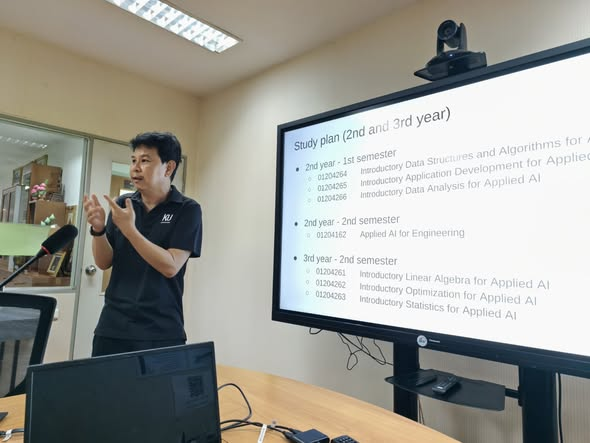
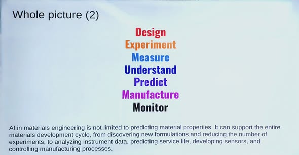
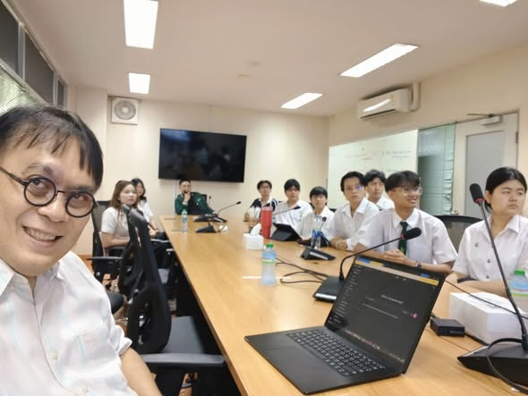

AI-Integrated Materials Engineering: เมื่อ AI เป็นเครื่องมือพื้นฐานของวิศวกรวัสดุ


วันนี้ผมมาคุยเรื่อง AI-Integrated Engineering กับนิสิตชั้นปีที่ 1 ภาควิชาวิศวกรรมวัสดุ ในโครงการ AIEP ประเด็นที่อยากชวนคิดคือการทำให้ AI เป็นเครื่องมือพื้นฐานในการแก้ปัญหาทางวิศวกรรม เช่นเดียวกับคณิตศาสตร์ การเขียนโปรแกรม และการจำลองที่วิศวกรใช้กันมา
เป้าหมายของแนวทางนี้คือให้วิศวกรใช้ AI ร่วมกับความรู้ในสาขาของตนได้ โดยไม่จำเป็นต้องเปลี่ยนทุกคนให้เป็นนัก AI จึงต้องเริ่มจากโจทย์ทางวิศวกรรมและพิจารณาว่า AI จะเข้าไปเป็นส่วนหนึ่งของวิธีทำงานได้อย่างไร
AI เชื่อมกับงานวัสดุได้มากกว่าการทำนายสมบัติ
วิศวกรรมวัสดุมีโจทย์ที่เชื่อมกับ AI ได้โดยตรง ตั้งแต่การวิเคราะห์ โครงสร้างจุลภาค หรือ microstructure การทำนายสมบัติของวัสดุ การปรับกระบวนการให้เหมาะสม ไปจนถึง การค้นพบวัสดุใหม่ หรือ materials discovery
ภาพรวมที่ใช้ประกอบการพูดคุยมองงานวัสดุตั้งแต่การออกแบบ ทดลอง วัด ทำความเข้าใจ ทำนาย ผลิต และติดตามกระบวนการ ขอบเขตการใช้ AI จึงครอบคลุมหลายช่วงของวงจรงาน โดยยังต้องเชื่อมกับความเข้าใจด้านวัสดุของวิศวกร


ออกแบบการเรียนให้สอดคล้องกับวิธีทำงานของวิศวกร
เมื่อ AI เข้ามาเป็นส่วนหนึ่งของวิธีทำงานแล้ว การออกแบบหลักสูตรต้องพิจารณาว่าจะเชื่อมเครื่องมือนี้กับการเรียนวิศวกรรมอย่างไร จำนวนรายวิชา AI ที่เพิ่มขึ้นจึงเป็นเพียงส่วนหนึ่งของคำถามที่ใหญ่กว่า คือผู้เรียนจะนำความรู้และเครื่องมือมาร่วมกันแก้ปัญหาในสาขาได้อย่างไร
สำหรับผู้ที่สนใจแผนการเรียน สามารถอ่าน รายละเอียดวิศวกรรมวัสดุบูรณาการปัญญาประดิษฐ์ในโครงการ AIEP ซึ่งเป็นลิงก์หลักสูตรที่ผมแนบไว้ในความคิดเห็นแรกของโพสต์

